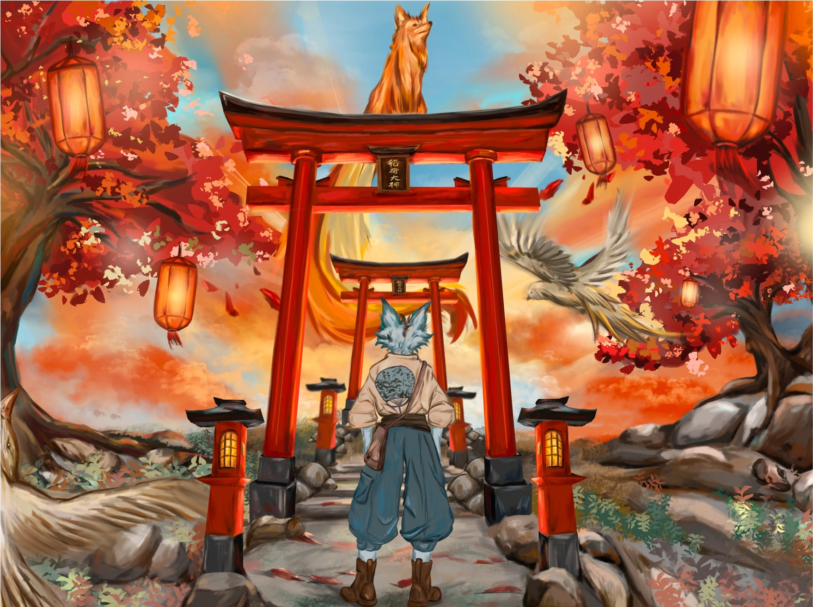
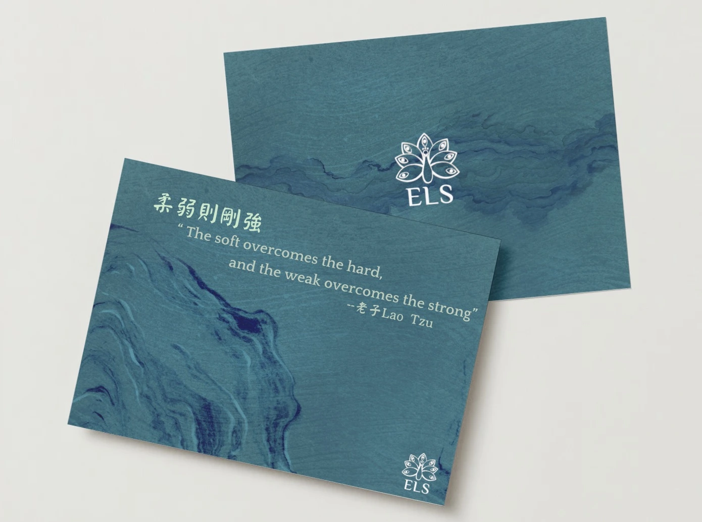

VISUAL DESIGN & IMAGINATIONSelected
探索作品↘Selected
works.
設計，可以有很多種樣子。
01 / IN THE FRAMEPineapple · 場景插畫
THE COLLECTION
每一件，不一樣。
01 / 10
滑動探索 · 點擊放大DRAG / DISCOVER
PRINTED STORIES
CONFERENCE BOOKLETS翻開，另一頁。
2024 — 2026

A DIFFERENT TEXTURE讓視覺，
讓視覺，
留下印象。
A LITTLE MOVEMENT
祝福，動起來。
點擊播放／暫停MOTION GREETINGS / 05